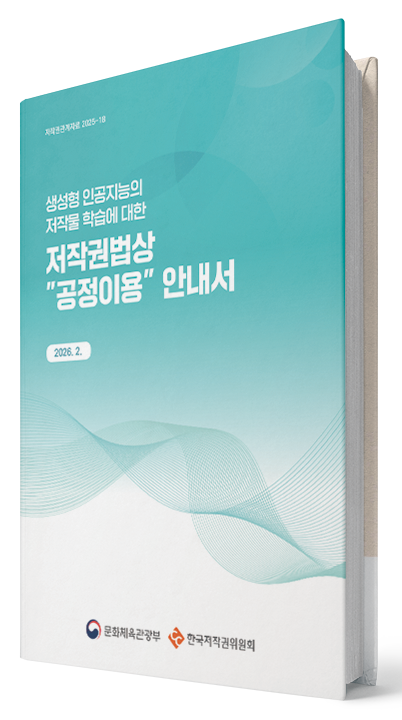

생성형 인공지능(Generative Artificial Intelligence, 이하 GAI)이
우리의 일상과 산업 전반에 자리 잡으면서, GAI 학습 과정에서
활용되는 저작물에 대한 권리는 어떻게 보호되는가에 대한 관심이
높아지고 있다. 이러한 상황 속에서 문화체육관광부(이하 문체부)와
한국저작권위원회(이하 위원회)는 GAI 학습 과정에서 저작물이
활용되는 다양한 사례를 검토하고, 균형 잡힌 공정이용 판단기준을
제시하기 위해 「생성형 인공지능의 저작물 학습에 대한 저작권법상
“공정이용” 안내서」를 마련했다.
GAI 학습에 적용될 수 있는 저작재산권 제한 및 예외 규정으로는
우리나라와 미국이 도입한 공정이용과 EU, 일본 등이 도입한 TDM(Text
and Data Mining)이 대표적으로 논의된다. 다만, 실제로 GAI 학습이
공정이용과 TDM 예외 규정의 적용을 받는지는 여전히 명확하지 않고,
권리자와 AI 개발사 간의 균형 확보 쟁점도 남아 있다. 변화하는 기술
환경에서 우리나라가 도입하고 있는 공정이용을 실질적으로 이해하고
적용할 수 있도록 지원하기 위해 이번 안내서를 마련하게 되었다.
01 공정이용, GAI 학습에 어떻게 적용되나?
저작권법 제35조의5에 규정된 ‘공정이용’은 새로운 기술 환경에 유연하게 대응하기 위해 마련된 일반 규정이다. 이번 안내서는 이 공정이용 규정이 GAI 학습에 어떻게 적용될 수 있는지 구체적인 해석 기준을 제시한다. 안내서에 따르면 공정이용 판단은 다음 네 가지 요소를 종합적으로 고려한다.
❶ 이용의 목적 및 성격
제1요소에서는 변형적 이용인지, 영리 목적인지, 그리고 저작물 이용 경위 또는 방법 등의 세부적 요소를 고려한다. 가령, 학습에 이용된 저작물과 관계없는 목적 또는 성격의 결과물을 생성하는 모델을 학습시키는 경우라면 공정이용 판단에 유리하게 고려될 수 있다. 반대로 영리 목적이 강하거나, 원저작물과 지나치게 비슷한 결과물 생성이 가능한 경우에는 공정이용에 불리하게 고려될 수 있다.
❷ 저작물의 종류 및 용도
제2요소에서는 사실 전달 목적의 저작물을 학습에 이용한 경우 비교적 공정이용에 유리하게 고려될 수 있다. 반면 문학·예술적 저작물을 학습에 이용한 경우 GAI가 해당 저작물의 표현적 특징을 재현하거나 유사한 결과물을 생성할 가능성이 있어 공정이용 판단에 불리하게 고려될 수 있다. 또한 온라인에서 자유롭게 접근 가능한 자료인지, 공개되지 않은 유료 콘텐츠인지에 따라 사회적 기대 수준이 달라져 공정이용 판단에도 차이가 생길 수 있다.
❸ 이용된 부분이 저작물 전체에서 차지하는 비중과 그 중요성
제3요소는 AI 개발사가 권리자의 저작물을 이용한 목적 및 성격(제1요소)에 필요한 범위 내에서 이용하였는지를 양적 측면(비중)과 질적 측면(중요성)에서 평가하는 요소이다. GAI 학습을 위해서 저작물 전체가 이용되어 제3요소 자체만으로는 공정이용에 불리하게 작용하나, 저작물의 이용이 기술적으로 불가피하고 필수적인 경우 다른 고려 요소에 따라 달리 판단될 수 있다.
❹ 저작물의 이용이 그 저작물의 현재 시장 또는 가치나 잠재적인 시장 또는 가치에 미치는 영향
제4요소는 저작물의 이용이 기존 저작물의 현재 시장 또는 가치나
잠재적인 시장 또는 가치에 미치는 영향을 판단하는 기준이다. GAI
학습으로 인해 원저작물의 판매 또는 경제적 손해가 발생하지 않거나
이용허락 기회를 훼손하지 않아 시장 대체 가능성이 없다면
공정이용에 유리하게 작용한다. 그러나 GAI 학습으로 인해
원저작물의 판매 또는 경제적 손해가 발생하거나 권리자의 이용허락
기회를 명백히 침해하거나 시장을 대체할 가능성이 있다면 공정이용
판단에 불리하게 작용할 수 있다.
안내서는 가상의 사례를 통해, 종합적 판단 예시를 소개하고 있다.
덧붙여 공정이용 여부는 각 요소를 개별적으로 판단한 후에
종합적으로 결론을 내리는 것으로, 하나의 요소가 최종 결론을
좌우하지는 않는다고 강조하고 있다. 우선, 공정이용으로 이용될 수
있는 경우는 다음과 같다. GAI 학습이 권리자의 정당한 이익을
부당하게 침해하지 않으면서 학습에 이용된 저작물이 원저작물의
이용 목적 또는 성격과 달라야 한다. 이때, 학습에 사용된 저작물이
합법적으로 취득되었고, 원저작물과 동일한 결과물이 생성되지
않도록 조치를 한 경우일수록 공정이용 인정에 유리하다. 또한, 학습
결과 개발된 AI 모델로 생성된 결과물에 의한 원저작물의 판매 손해
또는 경제적 손해가 없거나 이용허락 기회를 명백히 훼손하지 않아
시장 대체 가능성이 없다면 공정이용 판단에 유리하게 작용할 수
있다.
반면, 다음과 상황에서는 공정이용 인정이 쉽지 않다. GAI
학습이 권리자의 정당한 이익을 침해하면서, 이용 목적의 변형성이
없고, 사회적·공익적 목적을 인정하기 어려우며, 영리 목적인 경우
공정이용 인정이 어려울 수 있다. 더욱이 불법적으로 취득한
저작물이나 이용 허락이 명확하지 않은 저작물을 학습데이터로
이용하는 경우이면서 권리자의 이용허락 기회를 직접적으로
침해한다면 공정이용 판단에 불리하게 작용할 수 있다.
02 AI 시대의 저작권 분쟁, 어떻게 대비할까?

안내서는 공정이용 기준 제시에 그치지 않고, 앞으로 발생할 수
있는 저작권 분쟁에 대한 예방 및 해결 방안도 함께 제시한다.
이를 통해 창작자, AI 개발사, 이용자 모두가 불필요한 갈등을
줄이고, 기술 발전과 관련 문화 산업이 함께 성장할 수 있는
환경을 조성하는 것이 목표다.
문체부와 위원회는 이번 안내서가 창작자의 권익 보호와 AI 산업
발전 사이의 균형점을 찾는 데 중요한 길잡이가 되기를 기대하고
있다. AI 기술이 빠르게 발전하는 만큼, 저작권 제도 역시 시대
변화에 맞는 해석과 현실적 기준을 요구받고 있다. 이번 안내서가
그 출발점이 되어, 창작자와 기술 개발자가 상생할 수 있는
생태계가 구축되기를 기대한다.